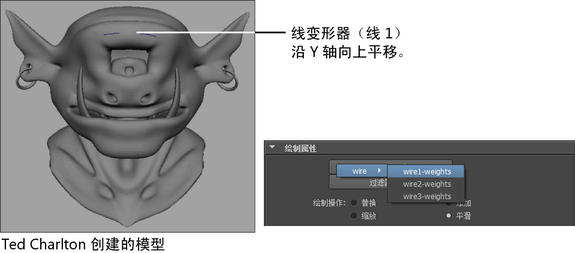
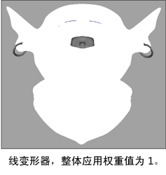
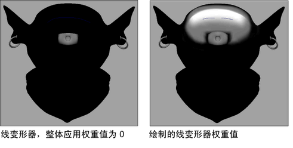
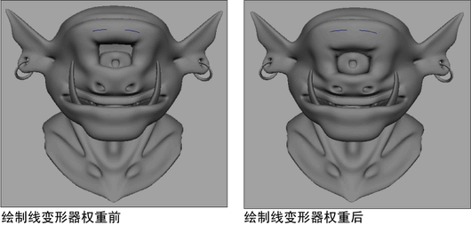

通过使用“绘制线权重工具”(Paint Wire Weights Tool)设置，您可以用 Artisan 笔刷对目标对象的线权重进行应用、分配和移除。因此可以自由设定线权重，以创建有机的非均匀和非对称变形效果。
还可以使用“镜像变形器权重选项”(Mirror Deformer Weights Options)，将线变形器权重从一个曲面映射到另一个曲面，或在同一曲面内进行映射。请参见镜像变形器权重。
绘制线权重时，也可以导入或导出线权重贴图。请参见导入线权重贴图和导出线权重贴图。
绘制线变形器权重
- 请为需绘制权重的线变形选择目标几何体。
- 选择“变形> (绘制权重)线”(Deform > (Paint Weights) Wire) >
 以打开绘制线权重工具。
以打开绘制线权重工具。 将出现“绘制属性工具”(Paint Attributes Tool)编辑器，其中显示“绘制线权重工具”(Paint Wire Weights Tool)设置。
- 在“绘制线权重工具(Paint Wire Weights Tool)”设置中，单击“属性”(Attribute)按钮，并从显示的列表中选择要为其绘制权重的线变形器。例如，wire1.weights。 
- 设置绘制线权重工具设置。默认情况下，对象中选定线变形器的整体应用权重值为 1。 
- 绘制线权重。绘制线变形器权重就象绘制平滑蒙皮权重。请参见手册的“角色设置”部分中的绘制平滑蒙皮点权重。
例如，目标对象中选定线变形器的整体应用权重“值”(Value)可以设定为 0，然后绘制其权重，以便为角色创建所需眉毛变形。

导入和导出线权重贴图
导出线权重贴图
- 为目标形状绘制线权重，直至获得需导出的变形或外观，以作为贴图。
- 选择变形的目标形状。
- 打开工具设置中的“属性贴图”(Attribute Maps)区域，然后打开“导出”(Export)区域。
- 设定“导出”(Export)设置，然后单击“导出”(Export)按钮。有关“导出”(Export)设置的说明，请参见绘制线权重工具设置。
显示“导出”(Export)浏览器窗口。
- 浏览到要将贴图保存到的位置，指定贴图的名称，然后单击“导出”(Export)。默认情况下，Maya 将贴图放置在当前项目的 sourceimages 文件夹中。
将目标形状的当前变形另存为属性贴图。
导入线权重贴图
- 选择变形的目标形状。
- 打开“绘制线权重工具(Paint Wire Weights Tool)”设置中的“属性贴图”(Attribute Maps)区域，然后打开“导入”(Import)区域。
- 设定“导入”(Import)设置，然后单击“导入”(Import)按钮。有关“导入”(Import)设置的说明，请参见绘制线权重工具设置。
显示“导入”(Import)浏览器窗口。
- 浏览要导入常驻文件的位置，选择贴图文件，然后单击“导入”(Import)。
目标形状根据导入的属性贴图中所指定的工具设置进行变形。